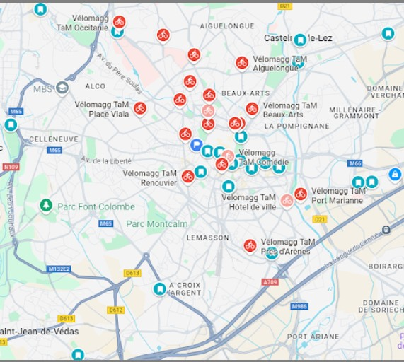

SAE 15 : Traitement de données pour Montpellier
SAE 15: Data Processing for Montpellier
Exploitation de données brutes provenant d'API avec Python et pandas pour les extraire, les analyser et en conclure sur l'efficacité des parkings de la ville. Processed raw data from APIs with Python and pandas to extract, analyze, and draw conclusions about the efficiency of city parking.
Voir le site
View site
SAE 2.2 : Développement de site web dynamique
SAE 2.2: Dynamic Website Development
Conception et réalisation d’un site web interactif en HTML, CSS, JavaScript et PHP, avec gestion de contenu dynamique. Designed and built an interactive website in HTML, CSS, JavaScript, and PHP, featuring dynamic content management.
Voir le site
View site
HackathonHackathon
Création de l’application CARBON avec PyQt5 et SQLite : interface graphique, base de données, système de points et badges. Developed the CARBON app using PyQt5 and SQLite: graphical interface, database integration, and a points & badges system.
Voir le Hackathon
View Hackathon